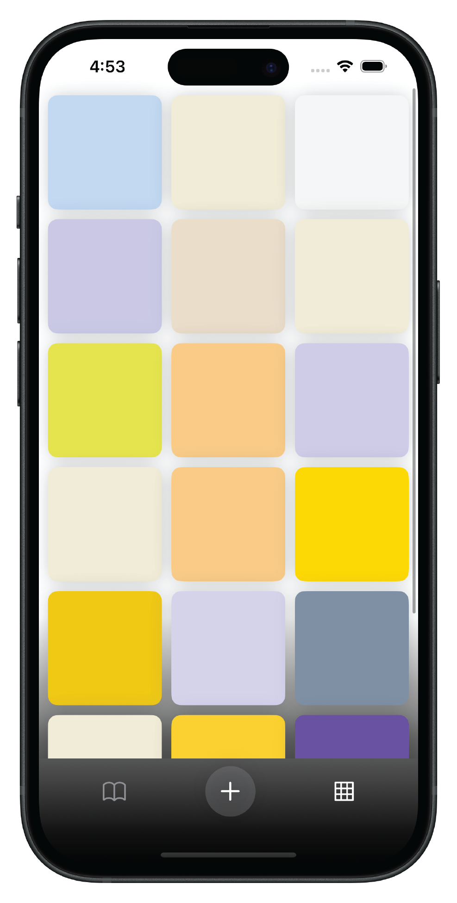
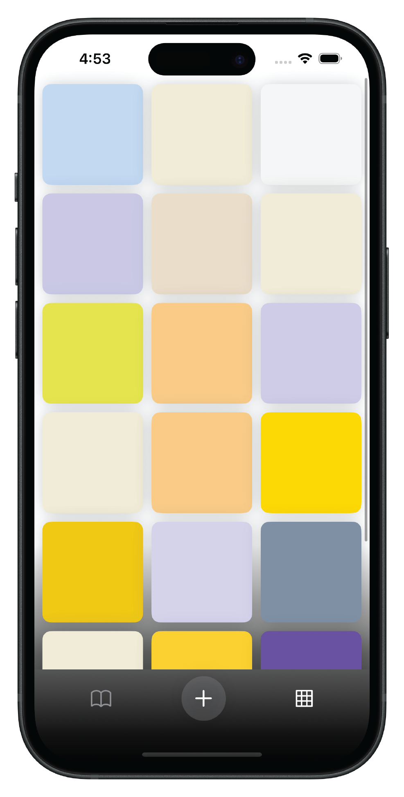

Goal
Create a gamified journaling app, which uses OpenAI's APIs to generate a color and image that represent the mood of the journal entries. The created colors and images provide a 'reward' for journaling, intended to make journaling a more fun habit. The user can flip through the journal as pages, or view a thumbnail quilt of a visual representation of their mood over time.
Motivation
I made the app for fun, because I wanted to learn iOS development, become familiar with using APIs, especially those having to do with AI. I also wanted to start journaling, and had the idea to create a journaling app that provides some feedback for entries.
How it works:

The App opens to the quilt view screen, where the user can view their past entries as a grid, or quilt of colors and images.
When a the user taps one of the quilt squares, they enter the journal view, where they can swipe through their entries like a book, viewing both the color, image and actual text entry.
To generate a new entry, the user taps the plus icon at the bottom to bring up the text entry view, and enters their thoughts. The text is passed to the GPT-4 API, which generates a json file with four parts: a hexcode for the chosen color, a name for the color, an explanation for why the color was chosen, and a prompt for an image generator for a quilt square based on the entry.
The first three items are added to the new entry, and the prompt is sent to the Dall-e 2 API, which generates an image, and adds that to the entry. Then the new entry is added to the entries array (a list of all the entries thus far) which is used to render the quilt and journal views.
After I had coded a usable prototype, I began user testing.
Problems identified in user testing:
Solutions:
- Users were attempting to tap on squares in quilt view
- This led me to the an important insight: I could get rid of the bottom tab bar altogether, and use the tapping of the quilt squares to navigate to the journal view, at the page corresponding to the tapped square. The user can still swipe though like a book, but the overall interface is simplified and more intuitive.
- Users’ journal entries were short,
leaving a lot of unused space on journal view pages.
- To fill the remaining space on the journal pages, I added image generation from the Dall-e 2 API. Displaying the images filled the screen satisfyingly and doing so on the quilt view also reinforced the quilt metaphor for the user.
- Users were confused by long loading times
before new entries appeared in the quilt view
- I implemented a simple loading animation on a blank square where the new quilt block was going to appear.
- Black text could be illegible if a dark color was generated.
- I added a portion of code to switch between white or black text depending on the luminance of the background color. This improved aesthetics and accessibility.
The app went through many versions before the final design:
Left The original design was Skeumorphic, designed to resemble a leather bound journal, with textured paper for the user to ‘write’ on, and read their thoughts.
Middle The very earliest version had a separate tab for the text entry, but I quickly replaced it with a tray that slid up from the bottom.
Right The original quilt view design was poorly executed: too much space between the squares, distracting drop shadows and an unpleasant gradient.

 

Left: The original design was Skeumorphic, designed to resemble a leather bound journal, with textured paper for the user to ‘write’ on, and read their thoughts.
Middle: The very earliest version had a separate tab for the text entry, but I quickly replaced it with a tray that slid up from the bottom.
Right: The original quilt view design was poorly executed: too much space between the squares, distracting drop shadows and an unpleasant gradient.


Before any coding or designing, I made this initial sketch diagram.
At first, the concept was to have three tabs, navigatble by a tab bar at the bottom: a journal view, with swipable pages, a grid view, that would later become the quilt, and a text entry view.